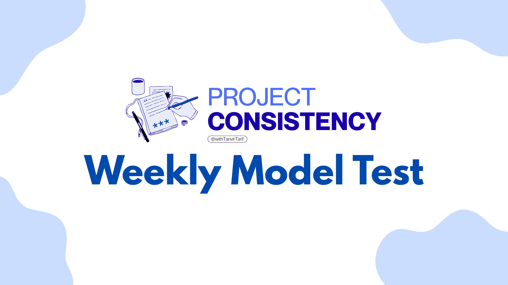

Project Consistency by Tanvir Tarif'">
Project Consistency
Weekly Model Test 06
Consistency is the Key to Success
পরীক্ষার ফলাফল ও মূল্যায়ন পত্র
সর্বমোট ফলাফল
0.00
✔️ সঠিক: 0
❌ ভুল: 0
⚪ অনুত্তরিত: 0
⏳ লিখিত খাতা সাবমিট করার শেষ সময় রাত ১০:৩০ মিনিট
📌 লিখিত প্রশ্নের জন্য গুগল Classroom বা Telegram গ্রুপ চেক কর
📌 প্রশ্নভিত্তিক পূর্ণাঙ্গ মূল্যায়ন ও ৪টি অপশনসহ সমাধান